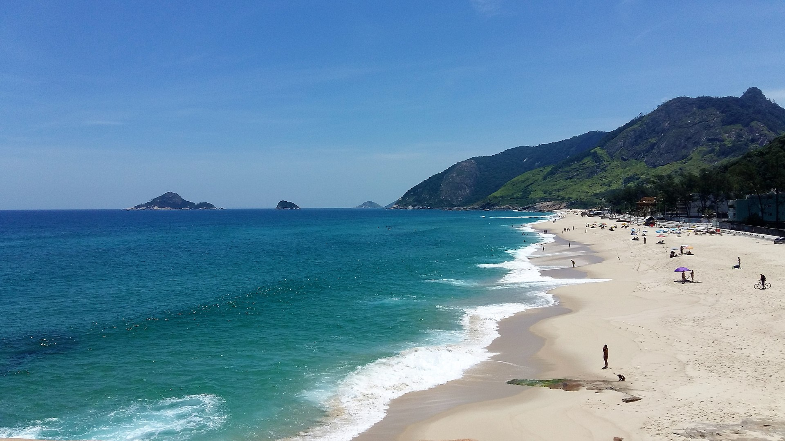
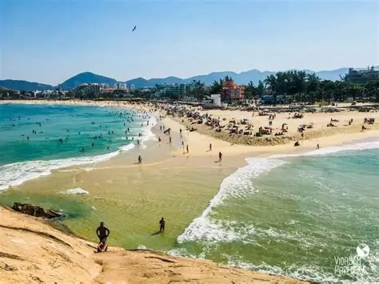
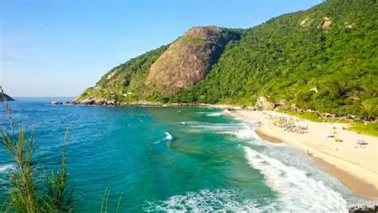
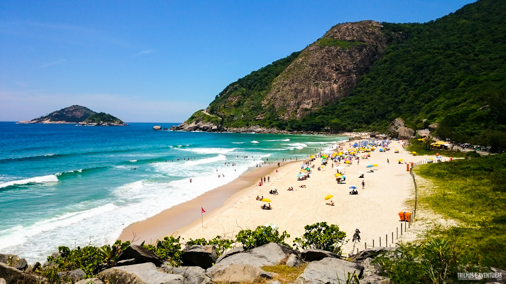
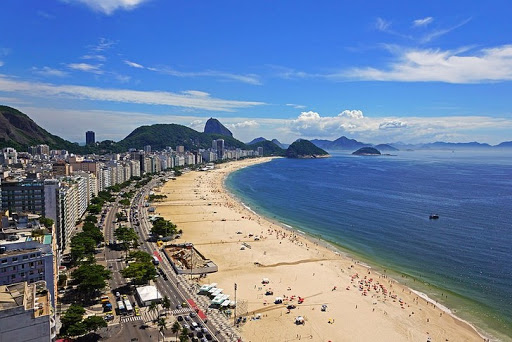
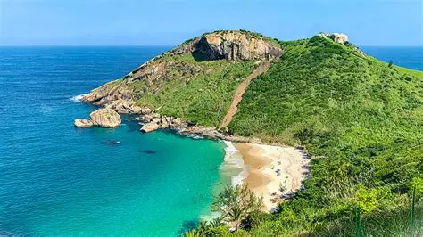

📍 200m (3 min a pé)Praia da Macumba
Famosa pelas ondas constantes e pelo surfe de longboard. Conta com ótimo calçadão e quiosques variados.
📍 Como ChegarDo surfe à tranquilidade, ordenadas da mais próxima à mais distante.

📍 200m (3 min a pé)Famosa pelas ondas constantes e pelo surfe de longboard. Conta com ótimo calçadão e quiosques variados.
📍 Como Chegar
📍 600m (7 min a pé)Faixa de areia larga e mar calmo perto da pedra. Ponto de partida para a subida da Pedra do Pontal.
📍 Como Chegar
📍 4.2 km (8 min de carro)Santuário ecológico cercado por morros e Mata Atlântica. Ponto de referência internacional do surfe.
📍 Como Chegar 📍 5.5 km (10 min de carro)
📍 5.5 km (10 min de carro)
Área de preservação ambiental tranquila e menos movimentada, perfeita para quem busca paz e quiosques bem estruturados.
📍 Como Chegar
📍 7.5 km (12 min de carro)Praia rústica e preservada em área de proteção ambiental. Areia avermelhada e muito espaço para relaxar.
📍 Como Chegar
📍 11 km (18 min de carro)A maior praia do Rio, com excelente infraestrutura de quiosques, calçadão para caminhadas e prática de esportes.
📍 Como Chegar
📍 15 km (Carro + Trilha)Praia selvagem e paradisíaca acessível apenas por trilha leve (a partir de Barra de Guaratiba) ou barco. Natureza intocada.
📍 Como Chegar